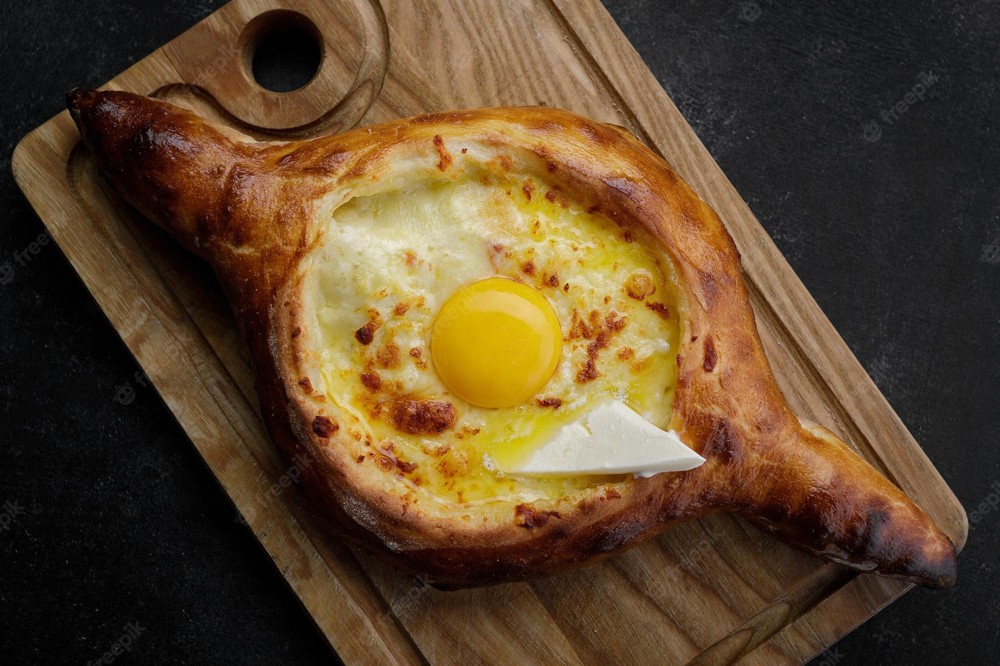

Adjarian Khachapuri

Adjarian (Acharuli/Adjaruli/Lazi) A boat-shaped khachapuri, with cheese, butter, and an egg yolk in the middle. It is thought to originate from the Laz people, who were sailors. This khachapuri is believed to represent a boat, the sea, and the sun.
Ingredients:
- 200g (7 oz) all-purpose flour
- 100 ml (3.4 fl oz) milk, lukewarm
- 100 ml (3.4 fl oz) milk, lukewarm
- 4g (1 tsp) fresh yeast
- 4g (1 tsp) salt
- 8 ml (2 tsp) sunflower oil, for greasing
- 200g (7 oz) Imeruli cheese
- 100g (3.5 oz) sulguni
- milk, as needed
- 2 eggs
How to prepare:
- Make the dough from flour, milk, water, and yeast, then mix the salt into the dough and grease it with oil. Knead the dough very well, for about 5 minutes. Now, dust your hands with flour, and fold the dough in on itself four times. Leave the dough to rise for 8 hours at room temperature or for 24 hours in the refrigerator.
- Divide the dough into two balls, then cover them and let them rise for 90 more minutes.
- When 90 minutes are up, put a pizza stone in the middle oven rack and set the oven to preheat to maximum temperature.
- Grate the cheeses into one bowl, then add as much milk as necessary to get a loose consistency.
- Shape each ball of dough into an oval using just your hands. Fold over the longer sides of the oval, then seal them together at the two narrow ends to get a „boat“ shape.
- Transfer the boats to a sheet of baking paper, then pull the folded sides apart to reveal a cavity into which you need to put the cheese mixture.
- An alternative way of shaping Adjarian khachapuri is to first put the cheese on the outer sides of the dough, then fold the dough over to get a cheese-filled rim, then fill the center of the boat with cheese.
- Place the baking paper with khachapuri on top of the pizza stone and bake 10-12 minutes. However, depending on your oven, the baking can take up to 15 minutes.
- At the 8 minute mark, check the khachapuri, then place one egg in the center of each. Bake for two more minutes.
- Serve hot, with a pat of butter on top.
Home Page
Return Top